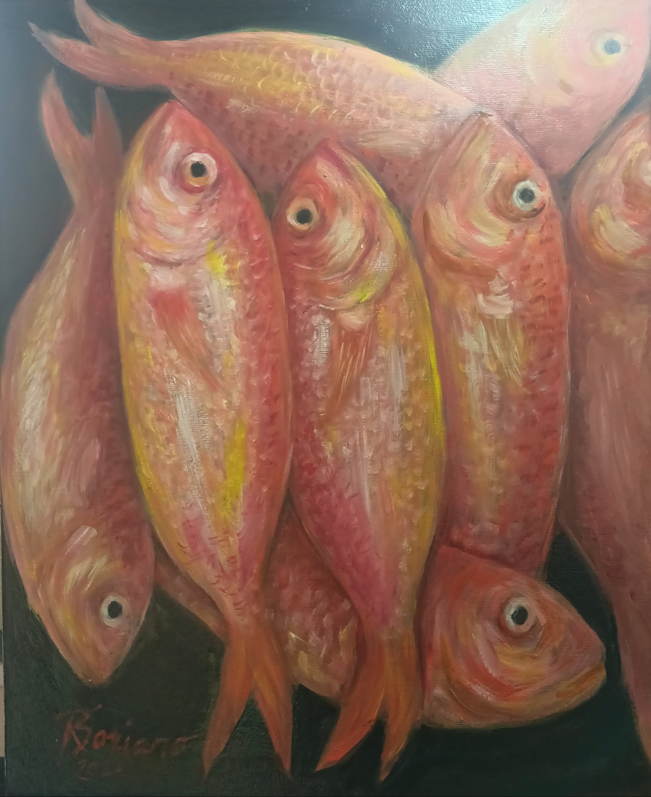

Fish Series: Color, Memory, and Luck on Canvas

Why fish? Because that’s where my early inspiration began—quiet mornings near the water, the shimmer of scales under sunlight, and a belief shared by many that fish represent luck, prosperity, and abundance. The Fish Series is my love letter to the sea: bold color, motion, and little stories carried by every wave.
What Draws Me to Paint Fish
I’ve always been fascinated by movement—fins cutting through water, reflections dancing on the surface, and the push–pull of currents. In this series I combine realism with narrative: not just “that looks real,” but “what’s the moment, and where is it going?”
Palette & Materials
- Medium: Oils, and sometimes acrylic for faster block-ins.
- Ground: Primed canvas with a subtle tooth for catching highlights.
- Brushes: Round/filbert for fins; liner for whiskers and scale accents.
- Extras: Palette-knife splashes and transparent glazing for that “wet” glow.
My Process, Step by Step
- Composition sketch: quick lines to lock in a dynamic pose.
- Underpainting: thin value map (ultramarine + burnt sienna).
- Color blocking: large shapes first—body mass and background gradients.
- Texture & motion: broken strokes for scales; knife work for splashes.
- Glazing: transparent layers to deepen color and water depth.
- Highlights: controlled, high-chroma accents along edges to bring life.


“Water never holds still—that’s why every stroke must suggest movement.”
Tiny Decisions That Matter
- Edge control: soft bellies for depth; crisp edges on key highlights.
- Color pairing: complementary blues & oranges make scales pop.
- Story cues: water direction hints at where the fish is headed.
Commission One for Your Space
I accept custom fish portraits—your favorite catch, a beloved koi, or a memory from a trip. Prints are also available for homes and offices. Tell me your preferred size, colors, and mood.
Thanks for reading! Which species should I paint next? DM me your ideas.